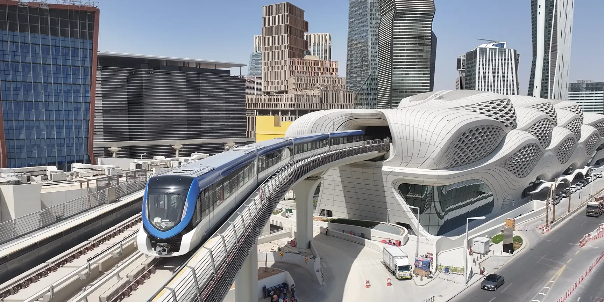

The Riyadh Metro Project
Your Name| Line | Major Stations | Status |
|---|---|---|
| Blue Line (Line 1) | Olaya Street, King Abdullah Financial District | Completed |
| Red Line (Line 2) | King Fahad Road, King Saud University | Completed |
| Green Line (Line 5) | King Abdulaziz Road, Ministry of Education | Under Testing |
The Riyadh Metro is one of the most ambitious public transportation projects in the Middle East. Designed to tackle the growing traffic congestion in Saudi Arabia’s capital city, the metro spans six lines covering around 176 kilometers and over 85 stations. The project is part of the city's broader Riyadh Public Transport Project (RPTP) aimed at transforming urban mobility, reducing traffic, and minimizing environmental impacts. It is a significant step forward in providing a sustainable and efficient means of transport for residents and visitors alike.
Each metro line has been carefully planned to serve key areas of Riyadh, including business hubs, residential neighborhoods, and universities. The system will feature driverless trains, state-of-the-art stations, and smart ticketing services, ensuring a modern and user-friendly experience. Notably, the stations are designed with cutting-edge architecture that reflects Saudi culture and heritage, blending tradition with futuristic design elements. Once fully operational, the Riyadh Metro will provide a reliable and eco-friendly transportation alternative, helping the city meet its Vision 2030 goals for a more connected and sustainable urban future.
